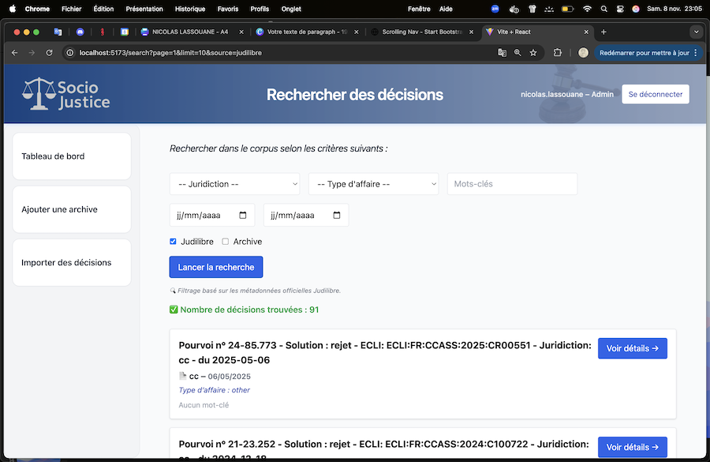

Fonctionnalités clés
Trois usages simples pour explorer et organiser des décisions de justice.

Import Judilibre
Récupération des décisions depuis l’API Judilibre (avec gestion des accès). Métadonnées normalisées pour un usage sociologique.

Saisie manuelle (PDF)
Ajout d’archives papier numérisées avec champs dédiés (juridiction, date, mots-clés) pour compléter les données publiques.

Recherche & Notes
Recherche par critères et annotations internes (mots-clés, notes). Préparation à l’analyse qualitative/quantitative.